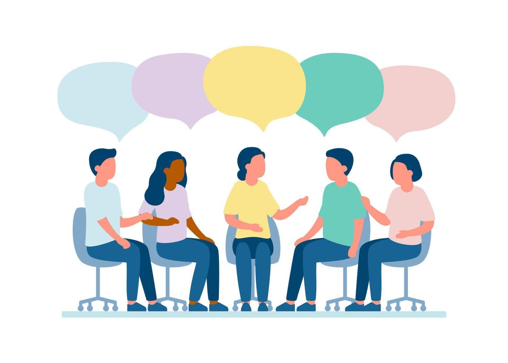
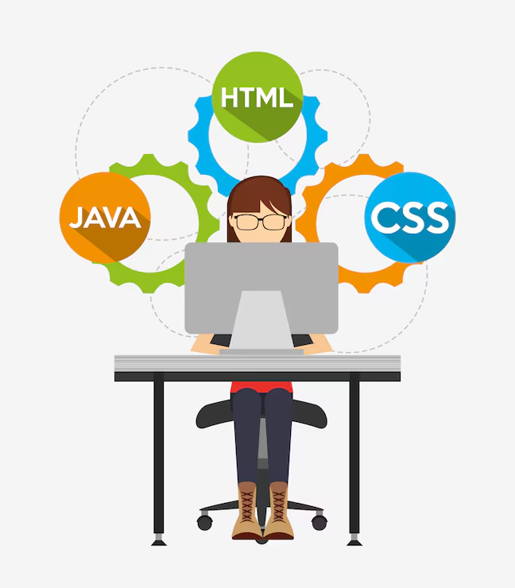
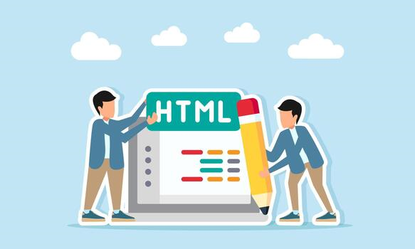

Oficina de Lógica de Programação

Encontros semanais para iniciantes desenvolverem o raciocínio lógico antes de partir para uma linguagem específica.
Transformando conhecimento em oportunidades
Conheça alguns dos projetos que aproximam mais pessoas do mundo da programação, de forma gratuita.

Encontros semanais para iniciantes desenvolverem o raciocínio lógico antes de partir para uma linguagem específica.

Curso introdutório de HTML, CSS e JavaScript para construir o primeiro site do zero em 8 semanas.

Voluntários da área orientam alunos na construção de currículo, portfólio e preparação para entrevistas.
Sua doação ajuda a manter nossos cursos gratuitos. Contribua de duas formas:
Chave Pix: 31999999911
Torne-se um apoiador recorrente e ajude a garantir a continuidade dos nossos projetos.